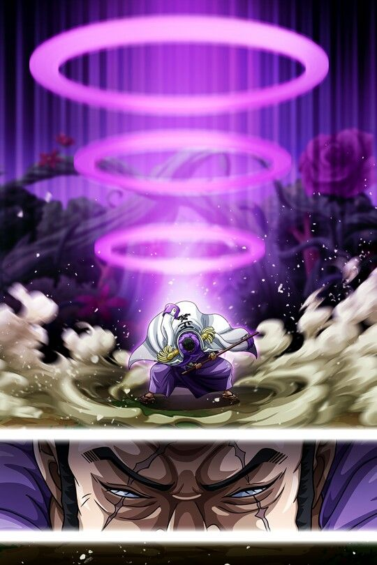

¿Quiénes son los Almirantes?
Los Almirantes en One Piece son los que tienen el puesto más alto dentro de la Marina. La Marina es una asociación
que trabaja para el Gobierno Mundial. Su objetivo es principalmente acabar con la mayor cantidad de piratas posible
haciendo lo que ellos llaman justicia aunque realmente no es así. Se podría decir que son los que se ven como héroes
en el mundo acabando con los malos que serían los piratas, pero realmente hacen actos horribles y no les importan los
ciudadanos para nada. Pueden acabar con una raza entera si para ellos es algún tipo de problema su existencia. Los
Almirantes son personas de temer, ya que son sumamente poderosos.
Akainu
Akainu, cuyo nombre real es Sakazuki, es un Almirante de la Marina. Antes de ascender al rango de
Almirante, Akainu era conocido como Vicealmirante Sakazuki. Es un hombre fuerte, serio y extremadamente dedicado a
la justicia absoluta. Su visión de la justicia es despiadada, creyendo que cualquier amenaza a la paz debe ser
eliminada sin piedad, incluso si eso significa sacrificar vidas inocentes. Akainu es famoso por su postura inflexible
y su disposición a tomar decisiones extremas para mantener la seguridad y la estabilidad en el mundo.
Es uno de los personajes más odiados del anime debido a los asesinatos que ha cometido con tal de conseguir lo que él
considera paz. Tras el asesinato de Portgas D.Ace este se convierte en el jefe de los demás Almirantes y muchos comienzan
a tener como objetivo acabar con él para tomar venganza.
Fruta del Diablo Magu Magu no Mi: Akainu es un usuario de una Fruta del Diablo tipo Logia que le
concede el poder de crear, controlar y transformarse en magma. Esta habilidad le otorga una fuerza destructiva
impresionante, ya que puede derretir casi cualquier cosa con su magma ardiente.
Control y Transformación en Magma: Gracias a su habilidad Logia, Akainu puede controlar y manipular
el magma a su voluntad. Puede crear proyectiles de magma, inundar el campo de batalla con lava ardiente y
transformarse en magma para evadir ataques físicos.
Haki del Armamento Avanzado: Akainu es un maestro en el uso del Haki del Armamento, una forma de Haki
que permite endurecer partes del cuerpo o armas para aumentar su poder ofensivo y defensivo. Su habilidad en el
Haki del Armamento es avanzada, lo que le permite enfrentarse a oponentes poderosos.
Experto En Combate Físico: Además de sus habilidades de Fruta del Diablo y Haki, Akainu
es un combatiente físico experto. Su estilo de lucha es agresivo y directo, y ha demostrado ser capaz de
enfrentarse a varios oponentes simultáneamente.
Kizaru
Borsalino, más conocido por su alias Kizaru, es un Almirante de la Marina en "One Piece". Es un hombre alto y delgado con una actitud
relajada y una sonrisa perpetua en su rostro. Su nombre hace referencia a su estilo de combate, ya que "Kizaru" significa
"Luz Amarilla" , que refleja la velocidad y la luminosidad de sus ataques. Kizaru es uno de los tres Almirantes, los más altos
rangos de combate en la Marina, y es conocido por su velocidad sobresaliente y su habilidad con la Fruta del Diablo.
Kizaru es famoso por su actitud tranquila y despreocupada, que a veces puede parecer indiferente o incluso burlona. Siempre habla con calma, incluso en
situaciones de combate, y parece ser difícil de impresionar. A menudo utiliza expresiones como "Qué fastidio" ("What a drag" en inglés) para describir
situaciones que le parecen molestas. Su personalidad relajada esconde la peligrosidad de su habilidad con la Fruta del Diablo y su habilidad para mantener
la calma incluso en los momentos más intensos.

Fruta del Diablo - Pika Pika no Mi: Kizaru es un usuario
de la Fruta del Diablo tipo Logia llamada Pika Pika no Mi, que le otorga la capacidad de crear, controlar
y transformarse en luz. Esta habilidad le confiere una velocidad asombrosa, ya que puede moverse a la
velocidad de la luz y realizar ataques extremadamente rápidos.
Velocidad y Reflejos Sobresalientes:
La capacidad de Kizaru para moverse a la velocidad de la luz lo convierte en uno de los personajes más rápidos en
el mundo de "One Piece". Sus reflejos son igualmente impresionantes, lo que le permite reaccionar rápidamente incluso
en situaciones caóticas.
Haki del Armamento y de la Observación: Kizaru ha demostrado habilidades en el uso de
ambos tipos de Haki. Su dominio del Haki del Armamento le permite endurecer partes de su cuerpo o sus armas, mientras
que su Haki de Observación le permite percibir la presencia de los oponentes y anticipar sus movimientos.
Fujitora
Issho, conocido por su alias Fujitora, es un Almirante de la Marina. A diferencia de muchos otros Almirantes, Fujitora no lleva un
abrigo largo típico de su rango y, en cambio, usa una camisa y pantalones tradicionales. Es ciego y utiliza una katana como bastón
para orientarse. Fujitora es un personaje intrigante con una personalidad distintiva y un enfoque único hacia la justicia.
Fujitora es conocido por su actitud calmada y respetuosa. Aunque es un Almirante de la Marina, tiene dudas sobre la justicia absoluta del Gobierno Mundial
y busca cambiar el sistema desde dentro. A menudo, se muestra reflexivo y respetuoso hacia aquellos con los que interactúa. A pesar de su ceguera,
Fujitora demuestra ser un luchador formidable y muestra una profunda compasión hacia los ciudadanos comunes y las víctimas de la guerra.

Fruta del Diablo - Zushi Zushi no Mi: Fujitora es un usuario de la Fruta
del Diablo tipo Paramecia llamada Zushi Zushi no Mi, que le otorga el poder de controlar la gravedad a su alrededor.
Puede aumentar o disminuir la gravedad, creando campos gravitatorios intensos que afectan a los objetos y personas
a su alrededor.
Manipulación de la Gravedad:
La capacidad de Fujitora para manipular la gravedad le permite realizar ataques devastadores y controlar el campo de batalla.
Puede hacer que objetos enormes caigan del cielo o aumentar la gravedad para inmovilizar a sus oponentes.
Esgrima Hábil: Aunque es ciego, Fujitora es un espadachín hábil y utiliza su katana tanto como
herramienta de orientación como en combate. Su destreza en la esgrima se combina con su habilidad de manipulación de la gravedad,
haciendo que sus ataques sean impredecibles y poderosos.
Haki del Armamento y de la Observación: Fujitora ha demostrado habilidades en el uso de ambos tipos de Haki. Su dominio
del Haki del Armamento le permite endurecer partes de su cuerpo o su arma, mientras que su Haki de Observación le permite percibir la
presencia de los oponentes y anticipar sus movimientos.
Ryokugyu
Aramaki, también conocido como Ryokugyu (significando literalmente «Toro Verde»), es una reciente incorporación a las fuerzas del Cuartel General de la Marina.
Poco se sabe de él, pero se sabe que ha ingerido una Fruta del Diablo, y que parece sostener una devoción particularmente especial por Akainu, a quien busca impresionar.
Es visto en acción por primera vez tras los acontecimientos del arco de Wano, donde se presentó para irrumpir en las celebraciones y tomar la cabeza de Monkey D. Luffy.
Por lo que se ha visto de él parece bastante arrogante y con la suficiente fuerza como para ser Almirante, sin embargo de momento no se le ha visto ser más poderoso que cualquiera de
sus compañeros. Su objetivo principal es impresionar a Akainu, y no piensa mucho en las acciones que toma.
Fruta del diablo Mori Mori no Mi: Fruta del Diablo tipo Logia que le otorga la capacidad de
transformarse en plantas y controlar el poder de la naturaleza. Sus poderes afectan el entorno en gran medida, haciendo florecer
vida vegetal, tal como se vio a las afueras de Udon, donde habían crecido varios árboles de gran tamaño durante su ataque.
Cambio de Forma y Manipulación del Tamaño:
Con los poderes de su fruta tiene la capacidad de transformar su cuerpo en ramas de árbol
e incrementar el tamaño de su cuerpo en su forma Logia hasta adquirir Tamaño Grande.
Absorción y Vuelo: Tiene la capacidad de deshidratar a la gente tocándolos
con sus ramas, lo cual es un poderoso ataque. Además puede volar generando una flor y haciéndola girar a una gran velocidad.
Sengoku (Antiguo Almirante Jefe)
Sengoku, también conocido como "Sengoku el Buda" , es un personaje importante en "One Piece" y, antes de su retiro,
fue el Almirante de la Flota de la Marina y posteriormente el Gran Almirante. Es conocido por su apariencia calva, su vestimenta
tradicional japonesa y su título que hace referencia a su habilidad con la Fruta del Diablo.
Antes de su retiro, jugó un papel crucial en la Marina y en eventos importantes como la Guerra en Marineford. Como Almirante de
la Flota y más tarde Gran Almirante, Sengoku fue una figura de autoridad respetada y poderosa en el Gobierno Mundial y la Marina.
Sengoku es conocido por su sabiduría y por actuar con calma y compostura. A diferencia de algunos de sus subordinados más impulsivos,
como Akainu, Sengoku tiende a ser más reflexivo y equilibrado. Aunque mantiene la disciplina y la autoridad, también muestra compasión y
preocupación por el bienestar de sus subordinados y la estabilidad del mundo.
Fruta del Diablo - Hito Hito no Mi, Modelo Daibutsu: Sengoku es un usuario de la Fruta del Diablo tipo
Zoan llamada Hito Hito no Mi, Modelo: Daibutsu. Le permite transformarse en una forma completamente humana o en una forma de Buda, otorgándole una fuerza física
y habilidades aumentadas.
Utilización de la Forma Buda:
Al activar la forma Buda de su Fruta del Diablo, Sengoku aumenta drásticamente su tamaño y fuerza. En esta forma, adquiere una
apariencia más imponente y sus habilidades de combate se vuelven aún más formidables.
Haki: Al ser Almirante, debe de saber utilizar diferentes tipos de Haki, como el de
observación y el de armadura.
Aokiji (Antiguo Almirante)
Aokiji, también conocido como Kuzan ocupó el
puesto de Almirante de la Flota en la Marina. Es conocido por su apariencia relajada, su abrigo largo y su actitud calmada. Aokiji es
un hombre alto con cabello largo y azul que se asemeja al hielo, lo cual refleja su habilidad única.
Aokiji se retiró de su posición como Almirante de la Flota después de perder en un enfrentamiento con su colega, Sakazuki (Akainu), por el título
de Almirante de la Flota o Almirante Jefe. Su retiro condujo a un cambio significativo en la estructura de poder de la Marina.
Aokiji es conocido por su personalidad relajada y su actitud más contemplativa en comparación con algunos de sus colegas más temperamentales. Aunque puede parecer indiferente en ciertas situaciones,
Aokiji se preocupa profundamente por la justicia y la estabilidad del mundo. Su retirada tras su desacuerdo con la dirección de la Marina
sugiere una lealtad a sus propios principios.
Fruta del Diablo - Hie Hie no Mi: Aokiji es un usuario de la Fruta del Diablo tipo Logia llamada Hie Hie no Mi, que le otorga el poder
de crear, controlar y transformarse en hielo. Esta habilidad le confiere una amplia gama de técnicas relacionadas con el hielo, desde congelar objetos
hasta crear armas y esculturas de hielo.
Manipulación del Hielo a Gran Escala: Aokiji puede manipular el hielo a una escala masiva, lo que le permite crear campos de
hielo extensos y afectar grandes áreas con sus habilidades. Esto le brinda un control significativo sobre el campo de batalla y la capacidad de cambiar
drásticamente el entorno.
Enfrentamiento con Akainu: Aokiji tuvo un enfrentamiento épico con Sakazuki (Akainu) en Punk Hazard para decidir quién se convertiría en el nuevo
Almirante de la Flota. Aunque Aokiji perdió, su decisión de retirarse en lugar de seguir sirviendo bajo Akainu demostró su firmeza en sus
principios y su rechazo de ciertos métodos extremos.
Carteles Almirantes Actuales